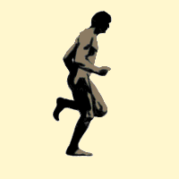
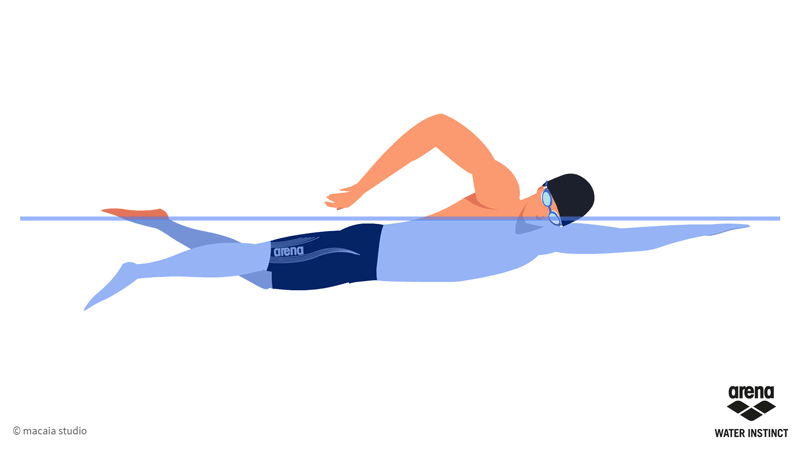

×
1. 걷기
걷기는 일상생활의 절반을 차지하는 운동입니다.
어디서든 할수있으며 부상위험이 적은 운동입니다.
평상시와 똑같이 걸으면 근육강화나 심장단련의
효과를 볼수 없으므로 속도를 높이고 보폭을 키워야합니다.
숨이 조금 가쁜정도의 빠르기로 걷는것부터 시작해보세요!
어디서든 할수있으며 부상위험이 적은 운동입니다.
평상시와 똑같이 걸으면 근육강화나 심장단련의
효과를 볼수 없으므로 속도를 높이고 보폭을 키워야합니다.
숨이 조금 가쁜정도의 빠르기로 걷는것부터 시작해보세요!

2. 달리기(조깅)
조깅은 느린 속도로 달리는 유산소 운동입니다.
주 목적인 빨리 달리는 것에 비해 몸에 압박을 덜 주면서
피트니스를 향상시키는 것입니다 또, 장시간 꾸준한 속도로
달리기를 하면서 페이스를 유지시키기 위함입니다.
주 목적인 빨리 달리는 것에 비해 몸에 압박을 덜 주면서
피트니스를 향상시키는 것입니다 또, 장시간 꾸준한 속도로
달리기를 하면서 페이스를 유지시키기 위함입니다.

3. 자전거 타기
자전거 타기는 심폐지구력을 강화하는데 좋은
대표적인 유산소 운동중에 하나입니다. 발목과 무릎에
충격을 줄 수 있는 달리기와 같은 유산소 운동과는 달리
오히려 발목, 무릎관절을 강화하는데 도움이 됩니다.
대표적인 유산소 운동중에 하나입니다. 발목과 무릎에
충격을 줄 수 있는 달리기와 같은 유산소 운동과는 달리
오히려 발목, 무릎관절을 강화하는데 도움이 됩니다.
4. 등산
등산은 말 그대로 산을 오르는것을 뜻합니다. 때로는 등산이
심장질환이나 관절염, 허리디스크, 비만이 있는 분들은
등산이 안좋을 수도 있습니다. 하지만 일반인 분들이나
경미한 건강질환을 가진 분들이 장기간에 걸쳐 규칙적으로
등산을 하게되면 각종 질병을 적절히 예방할 수 있습니다.
심장질환이나 관절염, 허리디스크, 비만이 있는 분들은
등산이 안좋을 수도 있습니다. 하지만 일반인 분들이나
경미한 건강질환을 가진 분들이 장기간에 걸쳐 규칙적으로
등산을 하게되면 각종 질병을 적절히 예방할 수 있습니다.

5. 수영
수영은 물에서 나아가기 위해 손발을 움직이는 행위를 뜻합니다.
물에만 가만히 있어도 영양분의 연소효과가 상당하게 생기게
되는데 헤엄이라는 형태로 운동까지 하게되면 지방까지 연소
되기 시작하면서 다이어트의 효과가 극대화됩니다.
물에만 가만히 있어도 영양분의 연소효과가 상당하게 생기게
되는데 헤엄이라는 형태로 운동까지 하게되면 지방까지 연소
되기 시작하면서 다이어트의 효과가 극대화됩니다.